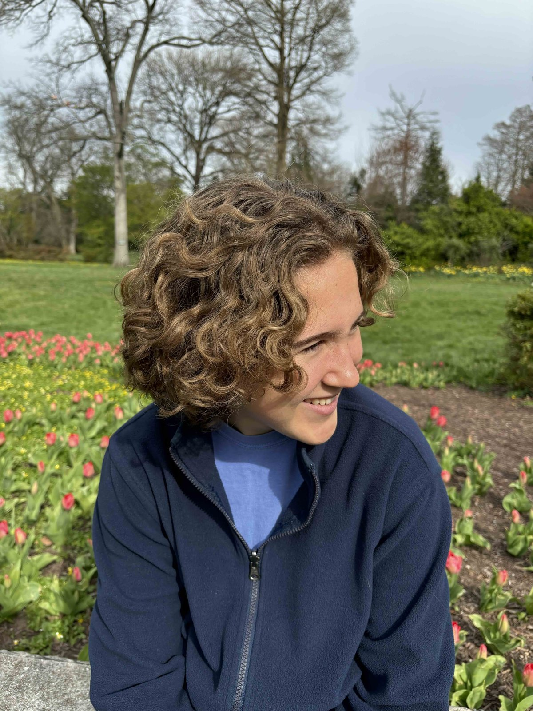

Natalie Zakamska
I am a high school senior in the Ingenuity Program at Baltimore Polytechnic Institute interested in the applications of environmental science, chemistry, and technology to solve current issues.

Education
August 2023 – expected 2027
Baltimore Polytechnic Institute
GPA (4 point scale): 4.0 (unweighted), 5.1 (weighted)
Enrolled in the Ingenuity Project, where students take accelerated STEM classes throughout high school and participate in a yearlong research program where they develop an independent research project and work under expert mentors in their area of interest.
August 2026 – December 2026
Johns Hopkins University
Accepted into the Future Scholars program, a competitive math program
allowing Baltimore high school seniors to take a math class of their choice at Johns Hopkins
University.
- Differential Equations and Applications
Research Experience
July 2026 – August 2026
Whiting Internships in Science and Engineering
Johns Hopkins University
Developed a simple wildfire spread model using an approximated level-set strategy. Troubleshot model issues and developed an algorithm for conversion of Google Earth imagery to a numerical array for simulation use. Presented results to research cohort. Project page.
Developed a simple wildfire spread model using an approximated level-set strategy. Troubleshot model issues and developed an algorithm for conversion of Google Earth imagery to a numerical array for simulation use. Presented results to research cohort. Project page.
June 2025 – June 2026
Ingenuity Project On-Site Research Practicum
Baltimore Polytechnic Institute
Studied metal contamination of sediment from Baltimore Harbor and the Chesapeake and potential reuse of dredged material. Utilized trace metal clean sampling and handling procedures. Presented at the 2026 Ingenuity Research Symposium at Loyola University. Paper (PDF).
Studied metal contamination of sediment from Baltimore Harbor and the Chesapeake and potential reuse of dredged material. Utilized trace metal clean sampling and handling procedures. Presented at the 2026 Ingenuity Research Symposium at Loyola University. Paper (PDF).
August 2025
Geoscience camp
Johns Hopkins University
Collected sediment and surface water samples from the Chesapeake Bay, and soil samples from an abandoned lot and community garden in Baltimore. Collaborated with peers to present on the efficacy of silver films for the detection of hydrogen sulfide, a toxic compound.
Collected sediment and surface water samples from the Chesapeake Bay, and soil samples from an abandoned lot and community garden in Baltimore. Collaborated with peers to present on the efficacy of silver films for the detection of hydrogen sulfide, a toxic compound.
Advanced Placement (AP) Coursework
Scores on a scale of 1 (lowest) – 5 (highest), where applicable.
2026–2027 (current)
- AP Biology
- AP English Literature and Composition
- AP Statistics
2025–2026
- AP Calculus BC (5)
- AP Chemistry (5)
- AP English Language and Composition (5)
- AP United States History (5)
2024–2025
- AP Calculus AB (5)
- AP United States Government and Politics (5)
- AP Physics 1 (self studied) (5)
2023–2024
- AP Computer Science Principles (5)
- AP World History (5)
Skills
- Laboratory: trace metal clean sampling and handling, glove bag
- Computational: Python, LaTeX
Activities
Co-Captain, Baltimore Polytechnic Institute Varsity Girls Soccer
This section is a draft.
Awards
- Distinguished honor roll (2023-2026)
- AP Scholar with Distinction (2025, 2026)
- Scholar athlete (2025)
- CollegeBoard School Recognition Award (2025)